地政学
ラリベラはアムハラ高地の奥にある聖地で、首都から遠い。道路、空港、治安、州内政治が巡礼と観光を左右し、山地の小都市ながらエチオピア正教の象徴として国内外の視線を集め続ける。地域の不安定さも影を落とす。

🇪🇹 エチオピア / アムハラ州 / World City Atlas
山地の岩を下へ掘り抜いた教会群の周りで、エチオピア正教の祈り、巡礼、観光労働、農村生活、世界遺産保全、雨季の水と道路が重なり合う高地の聖地都市です。
都市の骨格
ラリベラは、岩窟教会だけを切り出して見ると理解しにくいです。教会群の周囲には住宅、畑、市場、宿、学校、空港へ向かう道があり、巡礼と生活の動線が同じ高地の斜面を使っています。
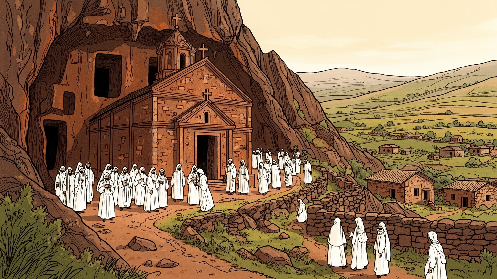
ラリベラはアムハラ高地の奥にある聖地で、首都から遠い。道路、空港、治安、州内政治が巡礼と観光を左右し、山地の小都市ながらエチオピア正教の象徴として国内外の視線を集め続ける。地域の不安定さも影を落とす。
宿泊、案内、土産物、食堂、清掃、運転、教会周辺の小商いに、周辺農村の畑仕事が重なります。客足が減ると現金収入は細り、若者の仕事、家族の学費、工芸の継承まで不安定になる現実があります。季節の波も大きい町です。
岩窟教会は観光名所である前に、エチオピア正教の礼拝、断食、聖歌、司祭、巡礼者の身体が毎日使う場所です。ゲンナやティムカットの季節には、町の時間が祈りに合わせて大きく変わります。信仰が日課を作る場所です。
住民は石の家、畑、市場、学校、病院、バス、空港道路を使い分け、旅行者は教会群と山道を歩きます。雨季のぬかるみ、物価、保存工事、混雑、礼拝への配慮が観光と日常を結んでいます。歩く速さも違う小さな町です。
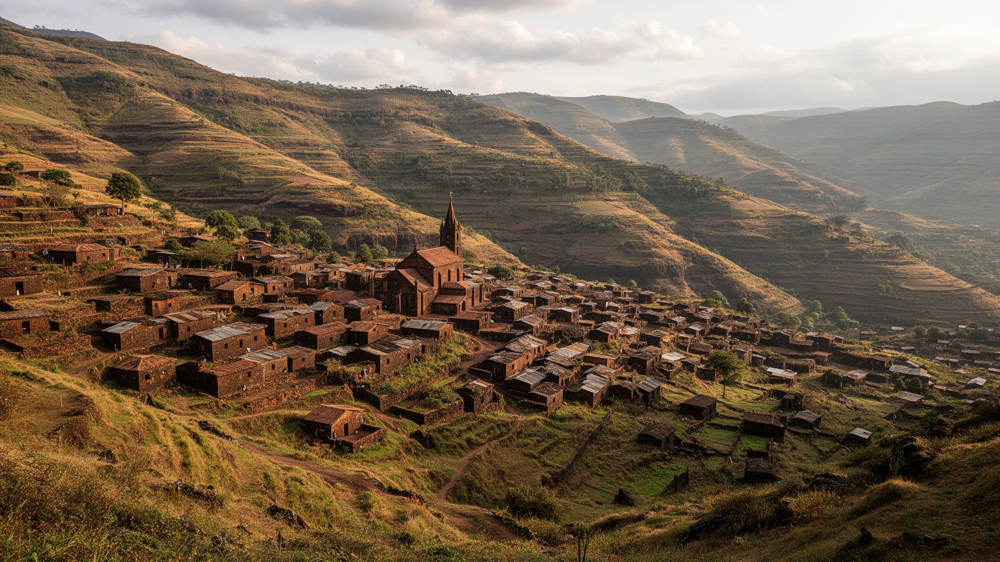
ラリベラを読む入口は、エチオピア北部高地の地形です。町は平坦な観光地ではなく、標高の高い斜面、谷、岩盤、季節河川、畑、石の住宅が折り重なる場所にあります。教会群は岩山の表面に建てられたのではなく、地面を掘り下げ、岩を残し、通路や中庭を削り出して作られたため、都市の中心は上へ伸びる塔ではなく下へ沈む空間として現れます。歩く人は坂を下り、狭い通路を抜け、また日差しの強い地上へ戻ります。こうした上下の感覚は、ラリベラの宗教経験と日常移動を結びつけています。住宅地は教会の周囲から外へ広がり、農地や放牧地、学校、宿泊施設、土産物店が斜面に沿って並びます。乾季には赤茶けた岩と土が強く見え、雨季には霧と泥、水の流れが町の動きを変えます。高地の涼しさは訪問者に快適さを与えるが、住民にとっては水の確保、道路の維持、畑の収穫、家の修理を左右する条件でもあります。標高の差は日差し、風、夜の冷え込み、荷物を運ぶ負担にも表れ、巡礼者の歩幅と住民の通勤時間を変えます。町の端に立つと、教会、畑、谷、遠い山道が一つの生活圏として見えます。岩を削った聖地は、地形への挑戦であると同時に、地形に従って暮らす知恵の延長でもあります。斜面の小道を読むほど、信仰と生活の距離が近いことが分かります。ラリベラの地形は、聖地を孤立した記念物にせず、山地の生活圏の中に置いて読むことを求めています。
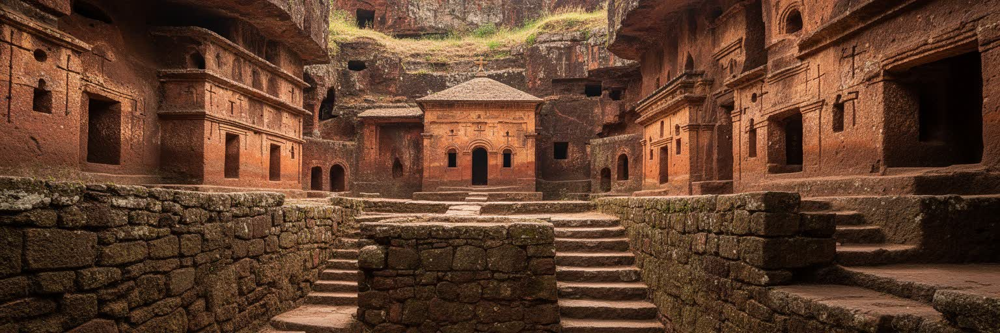
ラリベラの岩窟教会群は、建築を積み上げる発想とは逆に、岩を削って空間を作る技術と信仰の結晶です。ビエテ・メドハネ・アレム、ビエテ・マリアム、ビエテ・アマヌエル、ビエテ・ギョルギスなどの教会は、互いに異なる形と位置を持ちながら、溝、階段、トンネル、中庭で結ばれています。外から見ると大地に刻まれた穴のように見えますが、内部へ入ると柱、窓、聖所、壁画、香の匂い、聖歌が空間を満たすのです。教会は過去の石造遺産であるだけでなく、今も司祭、修道者、信徒、巡礼者が祈る生きた宗教施設です。岩を掘り残す構造は美しい一方、雨水、風化、人の通行、保護屋根、修復材料の選択によって常に傷みと向き合います。観光客が驚く造形の背後には、礼拝を止めずに保全を続ける難しさがあります。教会の配置には新しいエルサレムをめぐる象徴性もあり、地名、通路、水路、聖所の関係が巡礼の理解を深めるのです。地上の明るさと地下の暗さを行き来する体験は、建築を眺めるだけでは得られありません。石の階段に座る信徒、暗がりで本を読む聖職者、通路を掃く人の姿も教会の一部です。ラリベラの教会群を理解するには、写真映えする十字形の教会だけでなく、岩肌に触れる手、裸足の礼拝、暗い通路の移動、修復の足場、信徒が守る沈黙まで見る必要があります。岩窟教会は石の芸術であると同時に、共同体が毎日使い続ける都市の心臓です。
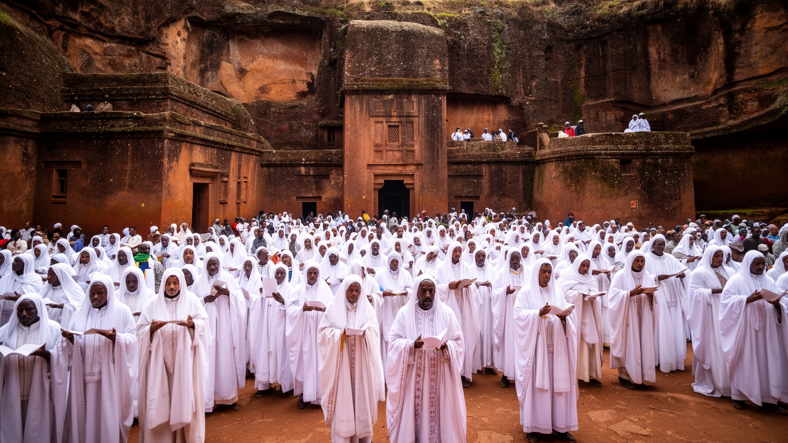
ラリベラの中心にあるのは、エチオピア正教の礼拝と巡礼です。多くの訪問者は岩窟教会を世界遺産として見るが、地元の信徒にとって教会は日曜の祈り、断食、洗礼、葬送、聖人の記憶、家族の願いを託す場所です。白いシャマをまとった巡礼者が教会の壁にもたれ、聖歌が夜明けの空気に響き、司祭が十字架や太鼓を持って儀礼を進める時、町は観光の時間ではなく宗教の時間に入ります。ゲンナやティムカットの時期には、国内各地から人が集まり、宿、食堂、道路、市場、教会周辺の広場が一気に混み合うのです。巡礼は信仰の実践であると同時に、家族の旅費、宿泊、食事、土産物、寄進を伴う経済活動でもあります。宗教儀礼を外から見る時には、撮影や移動の便利さより、祈る人の集中と空間の尊厳を優先する必要があります。教会の暦は、食事の内容、休む日、親族訪問、店の開閉にも影響し、信仰は家庭の台所や市場にも届いています。子どもは聖歌や祭礼の所作を見て育ち、町の音と記憶を引き継ぐのです。白い衣が広場に増える日、町は訪問者のために飾られるのではなく、共同体自身の祈りで満ちるのです。ラリベラでは、信仰は展示される文化ではなく、町のリズム、労働、食事、休息、社会関係を整える力です。巡礼者の流れを追うと、岩窟教会が遠い中世の遺物ではなく、現在のエチオピア正教社会を支える生きた場所だと分かります。
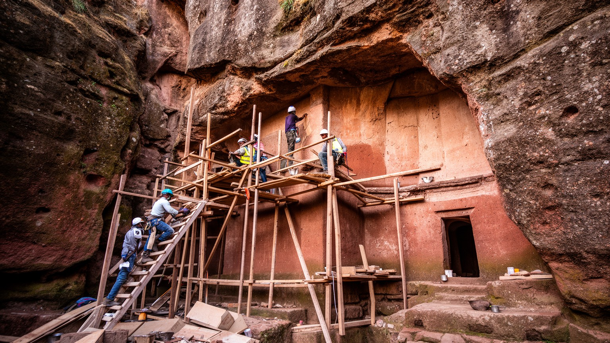
ラリベラの世界遺産保全は、石を守るだけの技術課題ではありません。教会群は今も礼拝に使われるため、修復、排水、保護屋根、見学ルート、照明、通行制限は、信徒の祈りと巡礼の動線を妨げない形で調整されなければなりません。岩窟建築は地面より低い位置にあるため、雨季の水、岩の風化、排水路の詰まり、足元の摩耗が大きな問題になります。大きな仮設屋根は雨から守る効果を持つ一方、景観や宗教空間の印象を変えるため、保存の方法そのものが議論を呼びます。国際機関、エチオピア政府、教会、研究者、地元住民、観光業者は、それぞれ違う優先順位を持っています。保全が観光のためだけに進むと、信徒の生活空間が脇へ押し出される危険があります。逆に、日常利用を尊重しすぎて傷みを放置すれば、次の世代へ遺産を渡せありません。保存工事は雇用や訓練を生む一方、通路の変更や立入制限によって商売の流れを変えることもあります。専門家の判断と地元の経験が噛み合わなければ、保全は町の信頼を失うのです。ラリベラの保存は、見た目を昔へ戻す作業ではなく、岩、雨、人の足、祈り、観光収入、地域の誇りを同時に扱う都市運営です。教会を支える排水溝や通路の補修にも、世界遺産としての価値と地元の実務が重なります。ここでは保存と使用が対立するのではなく、慎重な交渉として毎日続いています。修理の順番一つにも、礼拝と生活の判断が宿るのです。
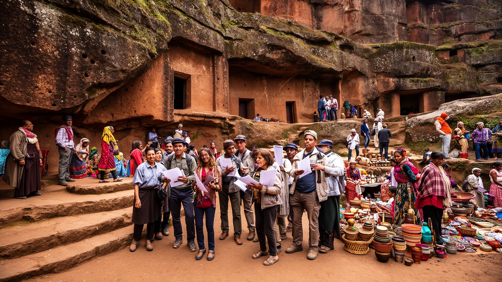
ラリベラの観光は、教会を訪れる人の感動だけでなく、多くの労働に支えられています。ガイド、宿泊施設の従業員、料理人、清掃員、運転手、土産物店の店主、織物や木工の職人、通訳、警備、チケット管理、教会周辺で小物を売る若者まで、来訪者の増減は町の家計に直接響くのです。国際観光が伸びる時期には、英語や他言語を学ぶ若者に仕事が生まれ、家族経営の宿や食堂にも現金収入が入ります。しかし紛争、感染症、航空便の減少、治安への不安が広がると、客足は急に止まり、在庫、家賃、学費、借金が重くなります。巡礼者は国内からも来るため、観光と信仰の収入源は完全には同じではありませんが、どちらも道路や宿泊、食堂、市場を使います。短時間で教会だけを見て去る旅は、地元に落ちる収入を限ることがあります。観光労働には待つ時間も多いです。客が来るか分からない日にも店を開け、車を整備し、言葉を学び、家族は収入の波を見ながら支出を抑えるのです。地域のガイドから説明を聞き、町に泊まり、市場や工房を訪れることは、聖地を支える労働を見えるものにします。値段交渉の短い会話にも、生活費と誇りの緊張が混じるのです。ラリベラの観光労働を読むことは、世界遺産の価値が、誰の時間、言葉、身体、待機によって経験可能になっているかを確かめることです。観光の成功は来訪者数だけでなく、働く人が町に住み続けられるかで測られるのです。
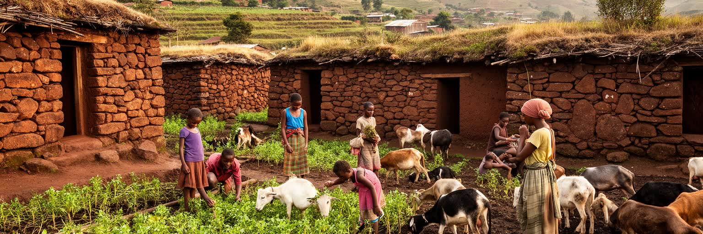
ラリベラは巡礼地として知られるが、町の背後には農村の生活が広がっています。周辺の斜面ではテフ、麦、豆類、野菜が育てられ、家畜、薪、水汲み、日々の市場が家計を支えます。住民の多くは観光や小商いと農業を組み合わせ、乾季と雨季、巡礼の季節、学校の学期、家族行事に合わせて働き方を変えます。畑の収穫が悪い年や観光客が少ない時期には、現金収入と食料の両方が不安定になります。市場では農産物、香辛料、布、日用品、宗教用品が並び、教会を訪れた旅行者と地元の買い物客が近い場所を歩きます。石造りの伝統的な家や丸い住居は、景観の魅力であると同時に、家族構成、貯蔵、調理、家畜との距離を反映した生活の器です。若者が観光業や都市部の仕事に向かう一方、高齢者や子ども、女性の労働は農村の日常を支え続けます。農村の時間は朝早く始まり、水や薪を運ぶ仕事、粉をひく準備、家畜の世話、畑への往復が一日の骨格になります。現金を得る観光業と、自家消費を支える農業は互いに補い合うのです。食卓のインジェラや豆の煮込みにも、山地の雨、畑、女性の労働が入っています。ラリベラを聖地だけで見ると、食料、燃料、水、住まいを作る人の時間が見えなくなります。教会の周囲で聞こえる祈りの声と、畑から戻る人の足音を同じ都市の音として聞く時、ラリベラは記念物の町ではなく、山地農村と巡礼経済が結び合う生活都市として見えてきます。
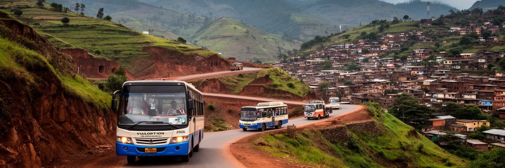
ラリベラの交通は、聖地の開き方を決める重要な条件です。町はアディスアベバから直線距離では遠く、道路で向かうには高地の町を結びながら長い移動を重ねるのです。空港は町の外にあり、航空便は観光客や巡礼者にとって大きな入口ですが、便数、天候、治安、費用に左右されます。道路は舗装区間が増えても、雨季の泥、斜面の崩れ、燃料費、車両の維持、検問や地域の安全状況によって移動時間が変わります。住民にとって交通は観光客を運ぶ手段であるだけでなく、病院、学校、仕入れ、親族訪問、行政手続きへ届く生活インフラです。教会群の周辺は徒歩で回れるが、周辺村落や修道院、山地の集落へ行くには車、ロバ、徒歩が組み合わさるのです。交通が弱いほど、観光収入は不安定になり、農産物の販売や医療へのアクセスも制限されます。一方で、遠さは巡礼の意味も深めるのです。長い道を経て到着する経験が、ラリベラを単なる見学地ではなく、身体でたどり着く聖地にしています。バス停や乗合車の待ち時間には、地域の情報交換も生まれます。荷物を運ぶ人、宿へ向かう客引き、空港から戻る運転手の動きは、町の経済の脈拍です。交通を読むと、都市の孤立と接続が同時に見えます。空港の便利さ、山道の遅さ、市場へ向かう日常の移動が重なり、ラリベラの現代性は遠さを完全には消さないまま形づくられています。遠いこと自体が、町の価値と脆さを同時に作ります。
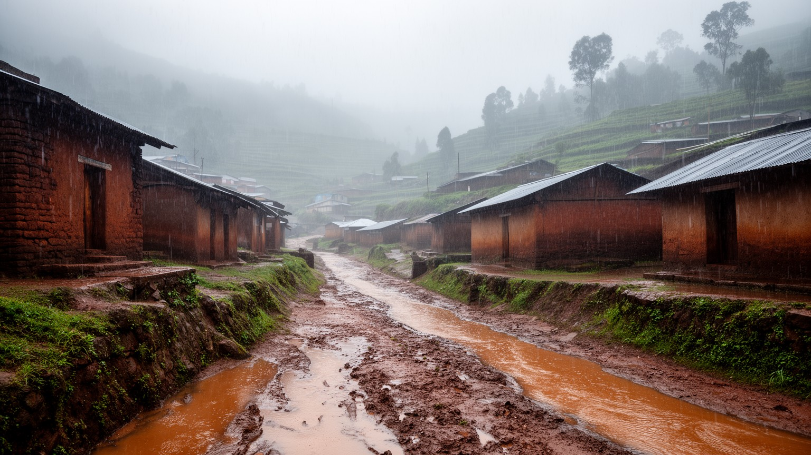
ラリベラの雨季は、町の表情を大きく変えます。乾季には赤い岩肌と強い日差しが目立つが、雨が続くと霧が斜面を包み、道はぬかるみ、排水路に水が集まり、岩窟教会の保全にも緊張が走るのです。岩を掘り下げた教会群は、上から流れ込む水や湿気に弱く、排水の詰まり、岩の劣化、壁画への影響が問題になります。雨は農業には欠かせないが、観光客の移動、工事、土産物の販売、巡礼者の宿泊にも影響します。住民は屋根、壁、道、靴、家畜、燃料、食料の備えを季節に合わせて調整します。水の管理は、世界遺産保全と日常生活を結ぶ見えにくい仕事です。教会の排水溝を掃除すること、坂道の崩れを直すこと、雨で遅れる交通を見込むことは、聖地の運営そのものに含まれるのです。雨の後には市場への道が重くなり、農産物の搬入、子どもの通学、病院への移動にも時間がかかるのです。乾季の水不足と雨季の水害が同じ町に現れるため、水は常に多すぎるか少なすぎる課題になります。気候変動によって雨の降り方が不安定になれば、農村の収穫と遺産の保存はさらに難しくなります。ラリベラの雨季を読むことは、美しい霧の景観を見るだけでなく、水がどこへ流れ、誰が泥を片づけ、どの岩が傷み、どの家が濡れるのかを見ることです。水は祈りの象徴であると同時に、町の道路、建物、観光、農業を試す現実の力でもあります。雨音は暮らしの計画を変える合図でもあります。
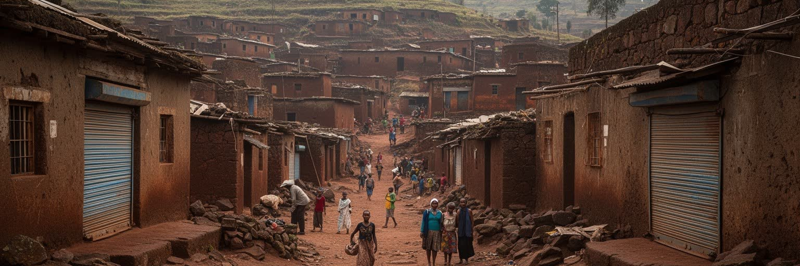
ラリベラは聖地として静かな印象を持たれやすいが、近年のエチオピア北部の紛争と地域的な不安は、町の生活と観光に大きな影響を与えてきました。報道で地名が出るだけで、航空便、団体旅行、宿泊予約、工房の注文、ガイドの仕事は止まりやすいです。住民にとって不安は、銃声や軍事的な出来事だけでなく、客が来ない月、学校費用を払えない家、店の在庫が動かない日、親族の安否を待つ時間として現れます。世界遺産の町であることは国際的な関心を集める力になる一方、危機の際には町が象徴として扱われ、住民の細かな経験が見えにくくなります。回復には、治安の安定だけでなく、観光客の信頼、道路の再開、宿泊業の資金繰り、教会行事の継続、若者の雇用、農村との流通が必要になります。巡礼が戻ることは精神的な励ましであり、同時に町の経済を少しずつ温め直すのです。ですが、危機の記憶はすぐには消えません。閉じた店を開け直すこと、ガイドが再び説明を始めること、家族が客室を整えることは、復興の小さな単位です。外からの支援や宣伝だけでは、住民の不安をすぐには消せありません。ラリベラを読むには、岩窟教会の長い歴史だけでなく、現代の不安を受けた住民がどのように仕事と祈りを再開しているかを見る必要があります。聖地の強さは、壊れないことではなく、傷ついた後に共同体が生活を組み直す力にも表れるのです。
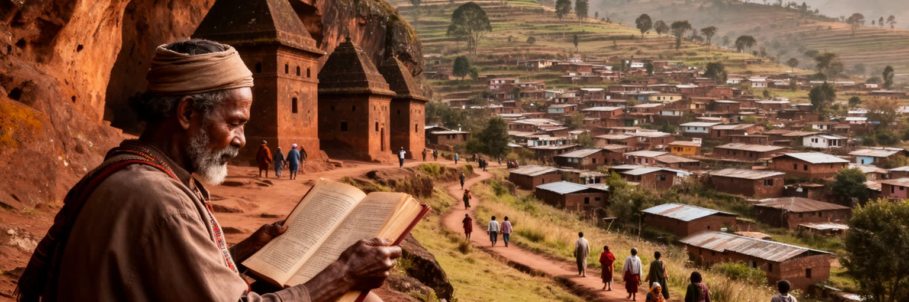
ラリベラの重要性は、人口や経済規模の大きさでは測れません。小さな高地の町に、エチオピア正教の巡礼、岩窟教会の建築、世界遺産保全、山地農村の生活、観光労働、雨季の水、交通の遠さ、地域社会の支えが凝縮していることに重みがあります。教会群だけを見れば中世の奇跡のように見えますが、周囲の坂道、市場、畑、宿、学校、空港道路、雨に濡れる排水路まで視野に入れると、聖地は現在の都市として立ち上がるのです。信仰は観光資源に変わり得るが、同時に住民が時間を整え、不安を受け止め、共同体を保つ方法でもあります。保存は国際的な義務であると同時に、礼拝を続ける地元の実務です。観光は町に収入をもたらすが、客足が途絶えれば家計を揺らすのです。ラリベラを訪れることは、岩を掘った教会に驚くだけでなく、その岩の周囲で働き、祈り、耕し、道を直し、客を迎える人びとの生活を読むことでもあります。都市としての課題は、聖地の神聖さを守りながら、住民の所得、教育、交通、住宅、保全負担をどう支えるかにあります。観光の目線だけで町を整えれば、地域社会は疲弊します。数字では小さく見える都市ほど、一つの道路、一つの祭礼、一つの雨が暮らし全体へ響くのです。遠くから来る人が静かに歩き、地域の説明に耳を傾け、町に時間を残すほど、聖地との関係は深くなります。ラリベラは過去の遺産ではなく、祈りと労働と保全が毎日交渉される現代の高地都市です。